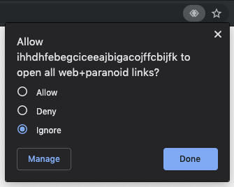

Thanks for installing Paranoid!
To start using Paranoid with web services, follow these simple instructions!
Step 1
Click "Allow" in the protocol handler prompt in the address bar.

If the icon is missing, check your Chrome settings page by opening
chrome://settings/handlers (right
click, copy link address), and make sure that this URL is not blocked.
Step 2
Please run the daemon server on your local computer. This daemon server is required to be running in order to communicate with KBFS and Keybase.
Once running, copy the URL and session token into the extension settings.
Go to settings